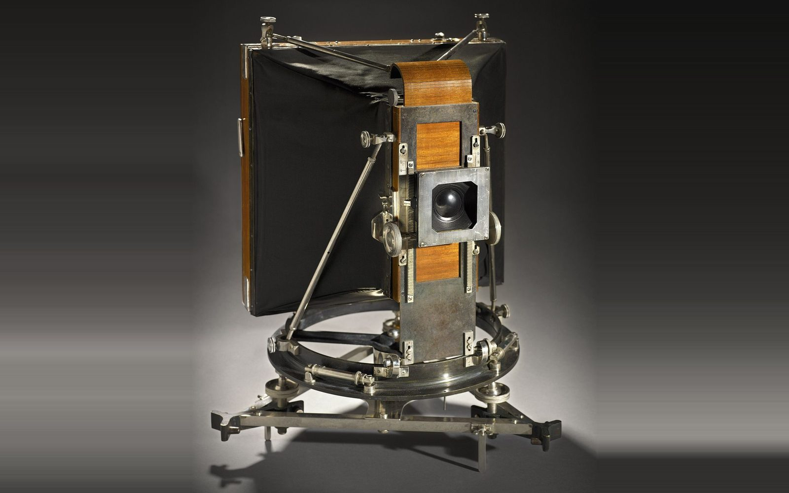
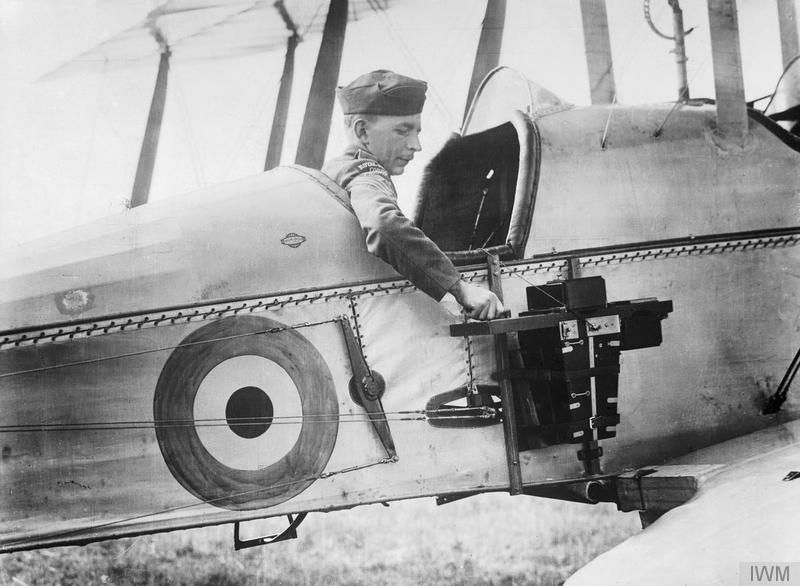
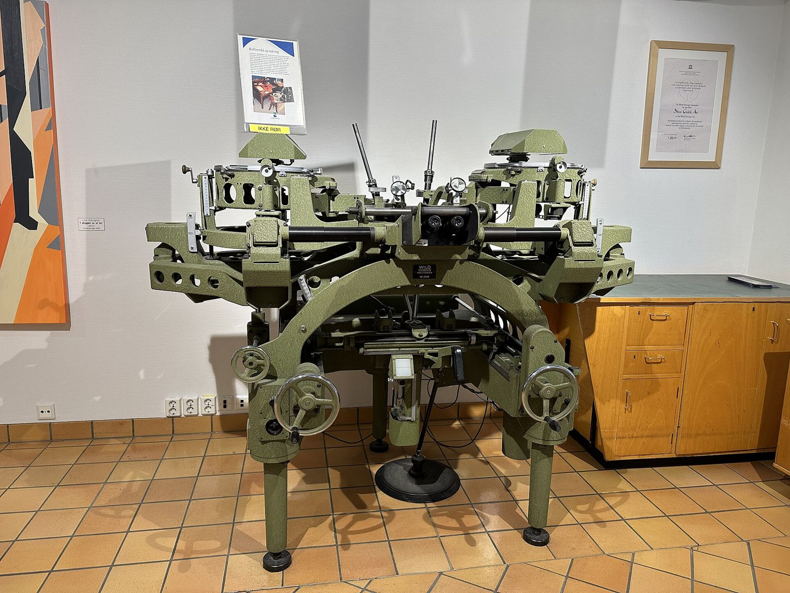
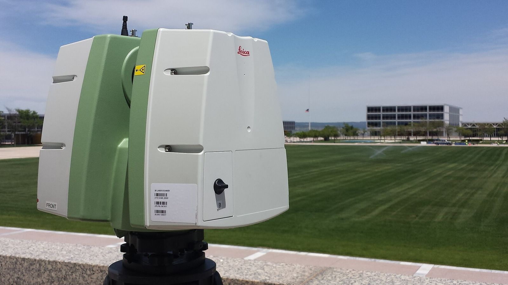

Reality Capture의 역사와 현재 진행 방향
범위 렌즈: 전 산업의 흐름을 훑되, 건설·AEC 관점을 주 렌즈로 삼는다. 같은 기술이라도 건설 현장에서 무엇이 달라졌는지를 기준으로 경중을 판단했다.
출처 표기 규칙: 이 문서에 인용한 모든 출처의 확인 날짜는 2026-09-21이다. 인용 뒤 대괄호는 출처의 성격을 뜻한다.
| 태그 | 뜻 | 읽는 법 |
|---|---|---|
[학술] |
논문, 학회 발표자료, 표준화 기구 문서 | 동료 검토를 거친 주장으로 취급 |
[벤더] |
제조사·공급사의 자기 발표 | 검증된 성능이 아니라 마케팅 주장으로 취급 |
[제3자] |
업계 매체, 언론, 독립 평가 | 벤더와 이해관계가 없으나 검증 깊이는 사안마다 다름 |
출처를 붙이지 못한 판단에는 문장 끝에 (추정)을 달았다.
0. 이 문서가 역사를 보는 방식
Reality Capture의 역사를 센서 출시 연표로 적으면 아무것도 설명하지 못한다. 시기마다 현실을 숫자로 바꾸는 일을 가로막던 병목이 하나씩 있었고, 그 병목을 푼 기술이 다음 시대의 작업 방식을 정했다. 앞선 병목이 풀리면 곧바로 다음 병목이 드러나는 식이다.
그래서 각 시대 절 끝에 병목 → 돌파를 한 줄로 남겼다. 그 돌파가 만들어낸 새 병목이 다음 절의 출발점이 된다. 연표는 6장에 따로 두었다.
1. 전사(前史), 1850년대~1970년대 — 사진에 자를 대다
사진측량의 출발
사진이 발명되자마자 이걸로 지도를 만들 수 있지 않을까 하는 생각이 따라 나왔다. 프랑스 육군 공병 장교 에메 로쉐다(Aimé Laussedat, 1819~1907)가 1850년대부터 사진으로 지형을 측량하는 방법을 실험했고, 자신의 기법을 métrophotographie(계측사진법)라 불렀다 ([학술] https://onlinelibrary.wiley.com/doi/10.1111/phor.12277). 같은 발상이 독일에서도 거의 독립적으로 자라났다. 건축가 알브레히트 마이덴바우어(Albrecht Meydenbauer)는 1867년 글에서 Photogrammetrie라는 단어를 썼고, 오늘날 쓰는 photogrammetry라는 용어가 여기서 나왔다 ([제3자] https://en.wikipedia.org/wiki/Photogrammetry).
누구를 사진측량의 아버지로 볼지는 문헌마다 입장이 갈린다. 기법을 먼저 실용화한 쪽은 로쉐다이고 이름을 붙인 쪽은 마이덴바우어다. 용어의 최초 등장을 추적한 연구는 1867년 문헌은 익명으로 나왔고 마이덴바우어의 저작으로 확정된 때는 1892년이라고 정리한다 ([학술] https://www.isprs.org/society/history/grimm-the-origin-of-the-term-photogrammetry.pdf). 둘 중 하나를 고르기보다, 프랑스와 독일에서 10년 남짓 간격을 두고 같은 문제의식이 따로 자랐다고 읽는 편이 정확하다.

항공사진측량: 전쟁이 만든 수요
지상에서 카메라를 세워 찍는 방식은 한 번에 담을 수 있는 면적이 좁다. 이 한계를 항공기가 풀었다. 영국 조종사 프레더릭 로스(F. C. V. Laws)는 1912년에 수직 항공사진을 겹쳐 찍으면 입체경으로 볼 때 깊이가 살아난다는 점을 발견했고, 1915년에는 실용적인 항공 카메라가 나왔다 ([제3자] https://dronecenter.bard.edu/wwi-photography/). 1915년 뇌브샤펠 전투에서 영국군은 독일군 참호를 찍은 사진 지도 1,500장을 지휘관들에게 배포했다 ([제3자] https://en.wikipedia.org/wiki/Aerial_reconnaissance_in_World_War_I). 겹쳐 찍은 사진을 이어 붙인 모자이크 지도가 이 시기에 자리 잡았다.

여기서 중요한 건 사진 장수가 아니라 관행이다. 겹쳐 찍는다(overlap), 입체로 본다(stereo), 이어 붙인다(mosaic) 라는 세 가지가 이때 굳어졌다. 100년 뒤 드론 사진측량의 비행 계획도 정확히 같은 원리를 쓴다.
해석적 사진측량: 기계를 수식으로 바꾸다
20세기 중반까지 사진 두 장의 기하 관계는 도화기(stereoplotter)라는 정밀 기계의 링키지가 물리적으로 재현했다. 렌즈 왜곡, 지구 곡률, 대기 굴절 같은 보정을 기계 구조로 흉내 내야 했으니 장비는 비싸고 무거웠으며 다룰 수 있는 사진 배치도 제한됐다.

우노 빌호 헬라바(Uuno Vilho Helava)가 1957년 오타와에서 열린 해석적 공중삼각측량 학회에서 「New principle for photogrammetric plotters」를 발표하며 이 구조를 깼다 ([학술] https://www.semanticscholar.org/paper/New-principle-for-photogrammetric-plotters-Helava/035a49800133648d2fdf5a3ed03edd1101862ea9). 기계 링키지를 없애고 컴퓨터가 좌표 변환을 계산하게 하자는 제안이었다. 헬라바는 컴퓨터로 지구 곡률과 대기 왜곡을 자동 보정해 항공사진에서 지도를 만드는 방법을 특허로 냈다 ([제3자] https://www.thecanadianencyclopedia.ca/en/article/uno-vilho-helava). 최초의 실용 구현인 AP-1 시제품은 1963년에 만들어졌다 ([학술] https://www.asprs.org/wp-content/uploads/pers/1969journal/nov/1969_nov_1160-1168.pdf). 1970년대 중반에 이르면 주요 계측기 회사 대부분이 아날로그 장비 개발을 접고 해석적 도화기로 갈아탄다 (추정).
병목: 사진에 담긴 3차원 정보를 꺼내려면 정밀 기계로 광선다발을 물리적으로 재현해야 했다. 돌파: 헬라바의 해석적 도화기(1957년 제안, 1963년 시제품)가 그 기계를 수식과 컴퓨터로 대체했다.
2. 1960~1990년대 — 빛으로 직접 재고, 사진을 화소로 다루다
여기서부터 두 갈래가 한동안 나란히 흐른다. 사진측량의 디지털화와 레이저 거리측정의 발달은 시기가 겹치므로, 아래 두 장은 연대순이 아니라 갈래별로 읽는 편이 낫다.
해석적 도화기로 계산 문제가 풀리자 다음 한계가 드러났다. 사진은 결국 밝기의 기록이지 거리의 기록이 아니다. 어두운 곳, 무늬 없는 벽, 물속은 사진으로 좌표를 뽑기 어렵다. 거리를 직접 재는 수단이 필요했다.
레이저 거리측정의 등장
1960년 시어도어 메이먼이 최초의 레이저를 시연했고, 이듬해 휴즈가 최초의 라이다 시제품을 만들었으며 1962년에는 상용 제품 Hughes Mark II Colidar가 나왔다 ([제3자] https://toddneff.com/books/lidarhistory/extras/lidarhistory-timeline/). 초기 응용처는 측량이 아니라 국방과 대기과학이었다. 1963년 SRI가 만든 Mark I 라이다는 구름과 스모그 층을 관측했다.
지형을 재는 일은 물에서 먼저 시작됐다. 조지 히크먼이 1968년 온타리오호 상공에서 최초의 수심측량 라이다를 비행시켰고, 1973년 NASA 월롭스가 수심 측정과 형광 관측을 겸하는 라이다를 DC-4에 실어 날렸다 ([제3자] https://toddneff.com/books/lidarhistory/extras/lidarhistory-timeline/). 우주에서도 같은 원리가 쓰였다. 1971년 아폴로 15호에 RCA가 만든 달 고도계가 실렸는데, 이것이 우주에 올라간 최초의 라이다다 ([제3자] https://lidarnews.com/apollo-15-space-lidar/, [제3자] https://www.optica-opn.org/home/articles/volume_20/issue_6/features/lidar_in_space_from_apollo_to_the_21st_century/).
항공 라이다가 지형도 제작에 쓰이려면 한 가지가 더 필요했다. 거리를 아무리 정확히 재도 비행기 자체의 위치와 자세를 모르면 점의 절대 좌표가 나오지 않는다. 1985년 빌 크래빌이 이끈 NASA 월롭스 팀이 GPS로 비행 중인 항공기의 위치를 결정하는 방법을 개척했고, 이 덕분에 항공 라이다 지형측량이 가능해졌다 ([제3자] https://toddneff.com/books/lidarhistory/extras/lidarhistory-timeline/).
지상 스캐너의 씨앗
지상 장비 쪽에서는 1981년 사이먼 랍과 그레고리 프레이저가 세운 Res-Tec이 나중에 FARO가 된다 ([제3자] https://toddneff.com/books/lidarhistory/extras/lidarhistory-timeline/). 이 시기 지상 장비는 아직 기계식 좌표측정기(CMM) 계열에 가까웠다 (추정). 삼각대에 올려 건물 하나를 통째로 스캔하는 물건은 1990년대 후반에야 나온다.
사진측량의 디지털 전환
같은 시기 사진측량 쪽에서는 사진을 화소 배열로 다루는 작업이 시작됐다. 해석적 도화기는 계산은 컴퓨터로 하되 여전히 필름 원판을 사람이 눈으로 보며 점을 찍는 장비였다. 필름을 스캔해 화소로 만들면 상관계산으로 대응점을 자동으로 찾을 수 있다. 1990년대 초 소프트카피 방식의 디지털 사진측량 워크스테이션(DPW)이 이 전환을 현실로 만들었고, 1990년대 대부분은 고가의 Unix·VAX 장비에서 돌다가 후반에 PC/Windows 기반으로 옮겨가며 값이 내려갔다 ([학술] https://www.sciencedirect.com/science/article/pii/S1195103624002556).
병목: 사진은 밝기의 기록이라 거리를 직접 주지 못했고, 사람이 눈으로 대응점을 찍어야 했다. 돌파: 레이저 거리측정이 거리를 직접 재는 길을 열었고(1960년대~), GPS가 항공 플랫폼의 절대 위치를 붙였으며(1985년), 디지털 워크스테이션이 대응점 탐색을 자동화하기 시작했다(1990년대 초).
3. 1990~2000년대 — 삼각대 위의 스캐너와 수학의 산업화
Cyrax: 현장에 들어온 첫 3D 스캐너
벤 카시라(Ben Kacyra)가 1993년 Cyra Technologies를 세웠다 ([제3자] https://toddneff.com/books/lidarhistory/extras/lidarhistory-timeline/). MIT, 로스앨러모스 국립연구소와 협력하고 셰브론의 투자를 받아 수백만 개의 측량점을 밀리미터 단위 간격과 정확도로 기록하는 장거리 스캐너를 만들어냈다 ([제3자] https://en.wikipedia.org/wiki/CyArk).
1998년에 나온 Cyrax 2400은 삼각대에 올리는 최초의 상용 3D 스캐너로 꼽힌다 ([제3자] https://toddneff.com/books/lidarhistory/extras/lidarhistory-timeline/). 사양을 보면 이 물건이 얼마나 초기 단계였는지가 드러난다. 전원부까지 포함해 무게 약 51 kg, 초당 평균 800점(최대 2,000점), 1회 스캔 시야각 40도×40도, 가격은 18만 달러를 넘었다 ([제3자] https://www.xyht.com/energyutilities/the-early-days-of-3d-scanning-part-6/). 그런데도 정유·발전 플랜트 개보수 현장에서 쓸모가 분명했다. 도면과 실제가 다른 노후 설비에서 실측 형상을 통째로 받아올 수단이 달리 없었기 때문이다 (추정).
2001년 라이카 지오시스템즈가 Cyra Technologies를 인수하면서 Cyrax와 Cyclone 소프트웨어가 라이카의 HDS 사업으로 편입됐다 ([제3자] https://www.fmlink.com/acquisition-by-leica-geosystems-gives-cyra-financial-boost-to-accelerate-growth/, [제3자] https://en.wikipedia.org/wiki/CyArk). 측량 장비 대기업이 3D 스캐닝을 정식 제품군으로 받아들인 사건이라, 지상 레이저 스캐닝이 연구 장비에서 측량 산업의 일부로 옮겨간 분기점으로 볼 만하다. 카시라는 2003년 문화유산을 디지털로 보존하는 비영리 단체 CyArk을 세워 같은 기술을 유산 기록에 돌렸다 ([제3자] https://en.wikipedia.org/wiki/CyArk).

항공 쪽의 필름 은퇴
2000년 7월, LH Systems의 ADS-40과 Z/I Imaging의 DMC가 나란히 발표되면서 항공 필름 카메라를 대체하는 경쟁이 시작됐다 ([학술] https://www.isprs.org/proceedings/xxxv/congress/comm3/papers/370.pdf). ADS40은 2000년 암스테르담 ISPRS 총회에서 공개된 뒤 2001년 여름 처음 인도됐고, 23×23 cm 필름 카메라에 필적하는 해상도와 커버리지를 낸 첫 항공 디지털 센서로 평가된다 ([학술] https://phowo.ifp.uni-stuttgart.de/publications/phowo01/Fricker.pdf).
번들조정의 산업화
같은 시기 컴퓨터비전 쪽에서는 사진측량이 100년 가까이 다듬어온 번들조정(bundle adjustment)을 자기 언어로 다시 정리했다. 1999년 트릭스(Triggs), 맥로클런, 하틀리, 피츠기번의 「Bundle Adjustment — A Modern Synthesis」가 그 작업이다. 사진측량의 번들조정 이론과 방법을 컴퓨터비전 쪽 구현자를 위해 정리한 서베이로, 희소 뉴턴법과 게이지 불변성, 로버스트 비용함수까지 다뤘다 ([학술] https://link.springer.com/chapter/10.1007/3-540-44480-7_21).
이 논문이 중요한 이유는 새 알고리즘을 발명해서가 아니라, 두 학문 공동체의 어휘를 번역해줬기 때문이다. 이후 등장하는 오픈소스 SfM 도구 대부분이 이 서베이의 정식화를 따른다 (추정).
병목: 측량 장비는 한 점씩 재고 사진측량은 사람이 개입해야 해서, 복잡한 기존 구조물을 통째로 기록할 방법이 없었다. 돌파: 삼각대형 상용 스캐너(Cyrax 2400, 1998년)가 면 단위 기록을 열었고, 번들조정의 재정식화(1999년)가 대규모 자동 정합의 수학적 토대를 공용화했다.
4. 2000~2010년대 — 오픈소스, SLAM, 그리고 값싼 센서
스캐너는 비쌌다. 대당 수억 원대인 장비와 전담 기술자가 필요한 작업은 확산에 한계가 있다. 2000년대 중반부터 이 벽을 세 방향에서 동시에 허물었다. 소프트웨어를 공짜로 만들고, 장비가 움직이면서 스스로 위치를 알게 하고, 센서 값을 소비자 가격대로 끌어내렸다.
SfM/MVS의 오픈소스화
노아 스내블리 등이 SIGGRAPH 2006에서 발표한 Photo Tourism은 인터넷에 흩어진 관광 사진 더미에서 카메라 위치와 3차원 점군을 복원해 보였다. 그 결과물로 공개된 Bundler는 순서 없는 사진 집합을 위한 SfM 시스템이었다 ([학술] https://github.com/snavely/bundler_sfm). 이어 VisualSFM이 나왔고, 2016년 요하네스 쇤베르거와 얀미하엘 프람의 「Structure-from-Motion Revisited」(CVPR 2016)와 그 구현인 COLMAP이 사실상의 표준이 됐다 ([학술] https://openaccess.thecvf.com/content_cvpr_2016/html/Schonberger_Structure-From-Motion_Revisited_CVPR_2016_paper.html).
논문 연도와 코드 공개 연도는 다르다. Photo Tourism 논문은 2006년이고 Bundler 코드는 그 뒤에 풀렸다. COLMAP도 2016년 논문 이전부터 개발이 진행됐다.
건설 쪽에서 이 흐름의 의미는 분명하다. 사진에서 3차원을 만드는 핵심 엔진이 무료가 되면서 경쟁이 알고리즘이 아니라 현장 워크플로와 데이터 관리로 옮겨갔다 (추정).
SLAM의 성숙
고정된 삼각대 대신 움직이는 장비로 기록하려면 지금 내가 어디 있는지를 실시간으로 풀어야 한다. 앤드루 데이비슨이 ICCV 2003에서 단안 카메라 실시간 SLAM을 발표했고, 확장판이 2007년 IEEE PAMI에 MonoSLAM으로 실렸다. 로보틱스의 SLAM 방법론을 제어되지 않는 단일 카메라라는 순수 영상 영역에 처음으로 성공적으로 적용한 작업이며, 일반 PC와 카메라로 30 Hz 동작을 달성했다 ([학술] https://www.doc.ic.ac.uk/~ajd/Publications/davison_etal_pami2007.pdf).
같은 2007년 클라인과 머레이의 PTAM은 추적과 매핑을 별도 스레드로 쪼개고 번들조정을 SLAM에 처음 끌어들였다. 2015년 무르아르탈 등의 ORB-SLAM은 PTAM 구조에 루프 폐쇄 검출을 더해 누적 오차를 크게 줄였다 ([학술] https://www.mdpi.com/2072-4292/14/13/3010). 라이다 쪽에서는 2014년 장지와 산지브 싱의 LOAM이 모서리와 평면 특징으로 실시간 라이다 오도메트리를 구현했고, 오늘날 휴대형·배낭형 스캐너 대부분이 이 계열의 후손이다 ([학술] https://www.ri.cmu.edu/pub_files/2014/7/Ji_LidarMapping_RSS2014_v8.pdf, 후손이라는 계보 판단은 추정).
소비자 깊이 센서
2010년 마이크로소프트가 PrimeSense와 함께 내놓은 Kinect는 적외선 구조광으로 VGA 해상도 깊이 영상을 30 Hz로 내보냈다 ([학술] https://ar5iv.labs.arxiv.org/html/1505.05459). 목적은 게임 입력이었지만 연구자들이 곧바로 범용 3D 캡처 장비로 끌어다 썼다. 2011년 KinectFusion은 움직이는 Kinect의 깊이 스트림을 실시간으로 융합해 실내 공간을 수 초 만에 3D 모델로 만들어 보였다 ([학술] https://www.microsoft.com/en-us/research/publication/kinectfusion-real-time-dynamic-3d-surface-reconstruction-and-interaction-2/).
드론과 서비스형 캡처
2013년 1월 7일 출시된 DJI 팬텀은 629달러에 GPS 위치 유지와 자동 귀환을 갖춘 기체였고, 항공 촬영의 진입 장벽을 소비자 수준으로 낮췄다 ([제3자] https://en.wikipedia.org/wiki/DJI_Phantom, [제3자] https://spectrum.ieee.org/the-consumer-electronics-hall-of-fame-dji-phantom-drone). 소프트웨어 쪽에서는 2011년 EPFL 컴퓨터비전연구소에서 분사한 Pix4D가 드론 사진측량 상용 소프트웨어의 표준 자리를 잡았다 ([벤더] https://www.pix4d.com/blog/pix4d-anniversary, [제3자] https://en.wikipedia.org/wiki/Pix4D). 미국에서는 2016년 8월 29일 FAA Part 107이 발효되면서 건별 면제 절차 없이 상업 비행이 가능해졌고, 이를 계기로 측량·건설 쪽 드론 도입이 실질적으로 시작됐다 ([제3자] https://www.faa.gov/newsroom/small-unmanned-aircraft-systems-uas-regulations-part-107, [제3자] https://www.commercialuavnews.com/ten-years-of-part-107-the-regulation-that-created-the-u-s-drone-industry).
장비를 파는 대신 캡처 자체를 서비스로 파는 모델도 이때 자리 잡았다. 매터포트는 2011년 설립됐고 ([벤더] https://matterport.com/news/matterport-celebrates-10-years-innovation-growth-and-industry-firsts), PrimeSense 칩 기반 시제품에서 출발해 2014년 Pro1 카메라와 웹 플레이어, 클라우드 서비스를 묶은 플랫폼을 내놓았다 ([제3자] https://en.wikipedia.org/wiki/Matterport). 한국에서는 2015년 설립된 큐픽스가 안전모나 드론에 붙인 360도 카메라로 건설 현장을 찍어 올리면 자동으로 가상 공간을 만들어주는 방식을 들고 나왔다 ([제3자] https://www.dnews.co.kr/uhtml/view.jsp?idxno=202208082356165620749). 큐픽스는 현재 자사 플랫폼을 360도 영상을 4D 디지털 트윈으로 바꾸는 건설·시설관리용 공간 지능 플랫폼으로 소개하며, ENR Top 30 종합건설사의 70%가 쓴다고 주장한다 ([벤더] https://www.cupix.com/).
건설 관점에서는 이 대목이 분기점이다. 전문 측량 인력이 장비를 들고 가는 대신 현장 인력이 이미 쓰고 다니는 물건(헬멧, 스마트폰, 소형 드론)에 캡처를 얹었다. 정확도를 일부 포기하는 대신 촬영 주기를 주 단위로 당겼고, 이것이 4D 진도 관리의 전제 조건이 됐다 (추정).
병목: 기록 장비와 소프트웨어가 너무 비싸고 무거워서 캡처가 특별한 이벤트였다. 돌파: 엔진의 오픈소스화(Bundler에서 COLMAP까지), 이동 중 자기 위치 추정(SLAM), 소비자 가격 센서와 드론, 서비스형 캡처 모델이 캡처를 일상 업무로 끌어내렸다.
5. 2020년대 — 주머니 속 라이다, 신경 렌더링, 그리고 자동 해석
스마트폰에 들어온 라이다
2020년 3월 18일 애플이 라이다 스캐너를 넣은 iPad Pro를 발표했다. 최대 5미터 거리까지 실내외에서 광자 수준의 나노초 단위 측정을 한다는 설명이었다 ([벤더] https://www.apple.com/newsroom/2020/03/apple-unveils-new-ipad-pro-with-lidar-scanner-and-trackpad-support-in-ipados/). 같은 해 가을 iPhone 12 Pro에도 같은 계열의 센서가 실렸고, 이듬해 곧바로 이 센서를 지구과학 용도로 평가한 제3자 연구가 나왔다 ([학술] https://www.nature.com/articles/s41598-021-01763-9).
기대와 실제는 구분해야 한다. 2025년 발표된 대규모 실내 스캔 실증에서는 6개 층 17,567 m² 건물을 대상으로 매터포트 Pro3와 iPhone을 비교해 Pro3가 187만 점, iPhone이 50만 점을 만들었고 두 점군 사이 평균 거리 오차가 0.0408 m로 측정됐다 ([학술] https://arxiv.org/abs/2506.14771). 스마트폰 라이다는 접근성을 바꿨지 측량 등급 장비를 대체하지 않았다.
신경 렌더링: NeRF에서 3DGS로
2020년 밀든홀 등의 NeRF는 장면을 신경망이 표현하는 방사휘도장(radiance field)으로 두고, 카메라 자세를 아는 사진 몇 장만으로 새로운 시점의 영상을 만들어냈다 ([학술] https://arxiv.org/abs/2003.08934 — Mildenhall 외, ECCV 2020 oral, arXiv:2003.08934). 사실감은 뛰어났지만 학습과 렌더링 비용이 커서 현장에 바로 쓰기는 어려웠다.
2023년 케를 등의 3D Gaussian Splatting이 그 비용 문제를 정면으로 풀었다. 장면을 3차원 가우시안 집합으로 표현해 빈 공간 계산을 피하고, 1080p 해상도에서 30 fps 이상의 실시간 신규 시점 렌더링을 달성했다 ([학술] https://arxiv.org/abs/2308.04079 — Kerbl 외, ACM Transactions on Graphics 42(4), 2023년 7월, arXiv:2308.04079). 발표 후 2~3년 사이 파생 연구가 폭증해 별도의 서베이 논문이 나올 정도가 됐다 ([학술] https://arxiv.org/abs/2401.03890).
건설 쪽 도입은 예상과 다른 자리에서 일어났다. 2025년 12월 AEC Magazine 분석에 따르면 가우시안 스플랫은 측량 도구가 아니라 현장 변화를 빠르게 기록하는 수단으로 먼저 자리 잡았다. 사전 계획 없이 휴대폰이나 드론 영상만으로 훨씬 자주 기록한다는 점이 이 기술의 쓸모다. 오토데스크(ReCap, Civil 3D), 벤틀리(iTwin Capture), Pix4D, ESRI ArcGIS Reality가 각자 지원을 붙이는 중이다. 같은 기사는 벤더가 측량 등급 정확도를 내세울 때 실제로는 라이다나 SLAM이 기하를 담당하는 혼합 워크플로라고 짚는다. 스플랫은 그 정확도를 물려받을 뿐 스스로 만들어내지 않는다는 지적이다 ([제3자] https://aecmag.com/technology/introducing-gaussian-splats-for-aec/). 외형 재현과 기하 정확도는 별개의 문제다.
자동 해석과 3D 기초모델
점군을 얻는 일보다 점군을 읽는 일이 더 오래 걸린다는 사실은 오래된 불만이었다. 딥러닝 기반 의미 분할이 이 지점을 공략해왔고, 점군에 의미를 붙여 BIM 모델로 옮기는 연구가 문화유산 디지털 트윈 같은 영역에서 나오고 있다 ([학술] https://www.nature.com/articles/s40494-024-01179-4). 2023년 SAM(Segment Anything Model) 이후에는 2D 기초모델의 지식을 3D로 증류하는 방향이 열렸고, Point-SAM은 점군용 프롬프트 기반 분할 모델을 제안했다 ([학술] https://arxiv.org/abs/2406.17741).
복원 파이프라인 자체를 신경망으로 바꾸려는 흐름도 있다. DUSt3R, MASt3R, VGGT 계열은 여러 장의 사진에서 카메라 자세와 조밀 점군을 한 번의 순전파로 뽑아, 특징점 매칭부터 번들조정까지 이어지던 다단계 구조를 건너뛰려 한다 ([학술] https://arxiv.org/pdf/2507.08448).
다만 항공 사진측량 블록에 이들을 적용한 2025년 평가는 냉정하다. 사진 10장 미만의 희소한 경우에는 COLMAP 대비 완전성이 최대 50%까지 개선되지만, 고해상도 대용량 이미지 집합에서는 사진 수가 늘수록 자세 추정 신뢰도가 떨어졌다. 결론은 대체가 아니라 보완이다 ([학술] https://arxiv.org/abs/2507.14798).
SLAM 스캐너의 현장 정착
이동식 SLAM 스캐너는 2020년대 들어 현장 장비로 자리 잡았다 (추정). NavVis VLX와 Leica BLK2GO를 토털스테이션과 Z+F Imager 5016 정적 스캐너를 기준으로 평가한 2024년 연구는 실내에서 5 mm 수준, 실외에서는 10 mm 이상으로 정확도가 떨어진다고 보고했다 ([학술] https://www.mdpi.com/2072-4292/16/17/3256 — Gharineiat 외, Remote Sensing 16(17):3256, 2024, 수치는 초록 기준). NavVis VLX 2세대와 3세대의 실내 기하 정확도를 다룬 2025년 ISPRS 보고도 이어졌다 ([학술] https://isprs-archives.copernicus.org/articles/XLVIII-1-W6-2025/107/2025/isprs-archives-XLVIII-1-W6-2025-107-2025.pdf). 벤더가 내세우는 상대 정확도 수치와 제3자 검증 수치는 대체로 같은 자릿수에 있다. 다만 실외 조건에서는 둘이 벌어지며, 장비를 고를 때 실무에서 기대야 할 근거도 여기에 있다.
병목: 기록은 쉬워졌는데 결과물이 사람 손을 거쳐야만 의미를 갖는 점 덩어리로 남았고, 사실감과 기하 정확도를 동시에 얻기 어려웠다. 돌파(진행 중): 신경 렌더링이 사실감 쪽을, 라이다와 SLAM이 기하 쪽을 맡는 혼합 구조가 자리 잡는 중이고, 기초모델이 해석 단계의 자동화를 시도하고 있다.
6. 연표
| 연도 | 사건 | 의미 |
|---|---|---|
| 1850년대 | 로쉐다의 métrophotographie 실험 (학술) | 사진을 측량 도구로 쓴다는 발상의 출발 |
| 1867 | 마이덴바우어가 Photogrammetrie라는 말을 씀 (제3자) | 분야에 이름이 생김 |
| 1912~1915 | 수직 항공사진의 입체 효과 발견, 실용 항공 카메라 등장, 뇌브샤펠 사진 지도 1,500장 (제3자) | 중첩·입체·모자이크라는 기본 관행 확립 |
| 1957 | 헬라바가 해석적 도화기 원리 발표 (학술) | 기계 링키지를 수식과 컴퓨터로 대체 |
| 1960~1962 | 최초 레이저 시연, 최초 라이다 시제품, 상용 Colidar 출시 (제3자) | 거리를 직접 재는 수단 확보 |
| 1968 | 최초 수심측량 항공 라이다 비행 (제3자) | 사진이 못 보는 영역을 라이다가 맡음 |
| 1971 | 아폴로 15호 달 고도계 (제3자) | 우주 최초 라이다, 원거리 측정 실증 |
| 1985 | GPS로 비행 중 항공기 위치 결정 (제3자) | 항공 라이다 지형측량의 전제 조건 해결 |
| 1990년대 초 | 디지털 사진측량 워크스테이션 보급 (학술) | 대응점 탐색 자동화의 시작 |
| 1993 | Cyra Technologies 설립 (제3자) | 지상 스캐너 상용화 시도의 출발 |
| 1998 | Cyrax 2400 출시(51 kg, 초당 800점, 18만 달러 이상) (제3자) | 삼각대형 상용 3D 스캐너의 등장 |
| 1999 | 「Bundle Adjustment — A Modern Synthesis」 발표 (학술) | 사진측량 수학이 컴퓨터비전 언어로 번역됨 |
| 2000~2001 | ADS-40·DMC 발표, ADS40 첫 인도 (학술) | 항공 필름 카메라의 은퇴 시작 |
| 2001 | 라이카 지오시스템즈의 Cyra 인수 (제3자) | 스캐닝이 측량 산업의 정식 제품군이 됨 |
| 2003, 2007 | 데이비슨의 단안 실시간 SLAM(ICCV)과 MonoSLAM(PAMI) (학술) | 카메라 하나로 이동 중 자기 위치 추정 |
| 2006 | Photo Tourism 발표와 Bundler 공개 (학술) | SfM 엔진의 오픈소스화 |
| 2010~2011 | Kinect 출시, KinectFusion 발표 (학술) | 깊이 센서가 소비자 가격대로 내려옴 |
| 2011 | Pix4D 창업, 매터포트 창업 (벤더, 벤더) | 드론 사진측량과 서비스형 캡처의 출발 |
| 2013 | DJI 팬텀 출시(629달러) (제3자) | 항공 촬영 진입 장벽 붕괴 |
| 2014 | LOAM 발표, 매터포트 Pro1 출시 (학술) | 실시간 라이다 SLAM과 실내 캡처 상품화 |
| 2015 | ORB-SLAM 발표, 큐픽스 설립 (학술, 제3자) | 루프 폐쇄로 누적 오차 감소, 360도 기반 현장 캡처 등장 |
| 2016 | COLMAP 논문(CVPR), FAA Part 107 발효 (학술, 제3자) | SfM 표준 확립과 상업 드론 비행의 제도화 |
| 2020 | 애플 라이다 스캐너 탑재, NeRF 발표 (벤더, 학술) | 캡처 장비의 대중화와 신경 렌더링의 시작 |
| 2023 | 3D Gaussian Splatting 발표 (학술) | 방사휘도장의 실시간 렌더링 실현 |
| 2024~2025 | Point-SAM, DUSt3R·MASt3R·VGGT 계열 평가 (학술, 학술) | 기초모델이 해석과 복원 단계로 진입 |
| 2025 | AEC 업계의 가우시안 스플랫 도입 분석 (제3자) | 신경 렌더링이 건설 현장 기록 수단으로 안착 |
7. 지금 진행 중인 전환 네 가지
7.1 기하와 외형의 분업 체제
가우시안 스플랫은 보기 좋은 결과를 빠르게 내지만 치수를 보장하지 않는다. 업계 분석은 측량 등급을 표방하는 스플랫 워크플로가 실제로는 라이다나 SLAM이 기하를 잡아준 혼합 구조이며, 스플랫은 그 정확도를 물려받을 뿐이라고 정리한다 ([제3자] https://aecmag.com/technology/introducing-gaussian-splats-for-aec/). 하나의 센서로 두 마리 토끼를 잡는 대신 역할을 나누는 쪽으로 정리되는 중이다. 건설 실무에서는 기록용 캡처와 검측용 캡처를 다른 등급으로 운영하는 방향으로 갈 가능성이 높다 (추정).
근거: 스플랫의 정확도 한계를 지적한 업계 분석과, 라이다를 결합해 기하 모호성을 줄이려는 연구 흐름 ([제3자] https://aecmag.com/technology/introducing-gaussian-splats-for-aec/).
7.2 복원 파이프라인의 신경망 대체 시도, 그리고 그 한계
DUSt3R에서 VGGT로 이어지는 순전파 방식은 특징점 매칭과 번들조정을 한 번의 추론으로 대체하려 한다 ([학술] https://arxiv.org/pdf/2507.08448). 사진이 매우 적을 때는 COLMAP 대비 완전성이 최대 50% 개선되지만, 고해상도 대용량 블록에서는 사진 수가 늘수록 자세 추정이 흔들린다. 항공 사진측량 블록을 평가한 연구는 전통 SfM/MVS를 완전히 대체하지 못하며 보완 역할에 머문다고 결론지었다 ([학술] https://arxiv.org/abs/2507.14798).
근거: 2025년 항공 블록 평가 논문의 정량 결과.
7.3 캡처 빈도의 증가와 4D화
캡처 장비가 헬멧과 스마트폰으로 내려오면서 기록 주기가 짧아졌다. 큐픽스는 360도 영상에서 4D 디지털 트윈을 만든다고 제품을 설명하고, 매일 100만 개 이상의 as-built BIM 요소를 처리한다고 주장한다 ([벤더] https://www.cupix.com/). 이런 수치는 벤더 자기 발표라 그대로 받기 어렵지만, 캡처가 일회성 준공 기록에서 상시 진도 기록으로 이동하고 있다는 방향 자체는 여러 출처에서 일관되게 나타난다.
근거: 스플랫 기반의 빈번한 현장 기록 사례 ([제3자] https://aecmag.com/technology/introducing-gaussian-splats-for-aec/)와 서비스형 캡처 벤더의 제품 포지셔닝 ([벤더] https://www.cupix.com/).
7.4 해석 자동화: 점군에서 의미로
점군을 BIM 객체로 바꾸는 작업은 여전히 사람 손이 많이 든다. 딥러닝 기반 의미 분할이 이 구간을 좁히고 있고 ([학술] https://www.nature.com/articles/s40494-024-01179-4), SAM 계열 기초모델을 3D로 확장하는 연구도 이어지고 있다 ([학술] https://arxiv.org/abs/2406.17741). 다만 점군은 불규칙하고 순서가 없으며 밀도와 결손이 제각각이라 이미지만큼 깔끔하게 풀리지 않는다.
근거: 점군 의미 분할과 scan-to-BIM 자동화 연구 동향.
참고: 시장 규모 수치에 대한 유보
리얼리티 캡처 시장을 2025년 68억 달러, 2034년 189억 달러(연평균 14.2%)로 추정하는 시장조사 보고가 있다 ([제3자] https://growthmarketreports.com/report/reality-capture-market). 이런 숫자는 정의 범위와 산정 방식이 공개되지 않는 경우가 많아, 방향성 참고용으로만 쓰는 편이 안전하다.
8. 한 문장 요약
Reality Capture의 역사는 무엇을 자동화했는가의 역사다. 19세기에는 사진에서 좌표를 뽑는 기하를 사람이 손으로 풀었고, 1957년 이후 계산이 컴퓨터로 넘어갔으며, 1990년대 후반 면 단위 기록이 장비로 가능해졌고, 2010년대에 캡처가 값싸지고 잦아졌다. 2020년대에 남은 마지막 구간은 해석이다.
용어 후보
용어집(00-glossary.md)에 올릴 만한 항목을 모았다. 정의는 이 문서에서 쓴 맥락 기준의 초안이다.
- 사진측량(Photogrammetry) — 사진에 기록된 상의 기하 관계로부터 대상의 위치와 형상, 치수를 측정하는 기법 — https://en.wikipedia.org/wiki/Photogrammetry
- métrophotographie(계측사진법) — 로쉐다가 자신의 사진 기반 지형 측량 기법에 붙인 최초의 명칭 — https://onlinelibrary.wiley.com/doi/10.1111/phor.12277
- 도화기(Stereoplotter) — 중첩 촬영한 두 장의 사진에서 입체 관측으로 지형과 구조물을 도면화하는 장비 — https://www.asprs.org/wp-content/uploads/pers/1969journal/nov/1969_nov_1160-1168.pdf
- 해석적 도화기(Analytical Plotter) — 기계 링키지 대신 컴퓨터 연산으로 사진의 기하 관계를 푸는 도화기 — https://www.semanticscholar.org/paper/New-principle-for-photogrammetric-plotters-Helava/035a49800133648d2fdf5a3ed03edd1101862ea9
- 디지털 사진측량 워크스테이션(DPW, Softcopy Photogrammetry) — 필름 대신 디지털 화소 영상을 다뤄 대응점 탐색을 자동화하는 사진측량 시스템 — https://www.sciencedirect.com/science/article/pii/S1195103624002556
- 번들조정(Bundle Adjustment) — 여러 사진의 카메라 자세와 3차원 점 좌표를 동시에 최적화해 재투영 오차를 최소화하는 계산 — https://link.springer.com/chapter/10.1007/3-540-44480-7_21
- SfM(Structure from Motion) — 순서가 정해지지 않은 다수의 사진에서 카메라 자세와 희소 3차원 구조를 동시에 복원하는 기법 — https://openaccess.thecvf.com/content_cvpr_2016/html/Schonberger_Structure-From-Motion_Revisited_CVPR_2016_paper.html
- MVS(Multi-View Stereo) — SfM으로 얻은 카메라 자세를 바탕으로 조밀한 3차원 점군이나 표면을 복원하는 단계 — https://colmap.github.io/
- SLAM(Simultaneous Localization and Mapping) — 이동하는 센서가 자기 위치 추정과 지도 작성을 동시에 수행하는 방법론 — https://www.doc.ic.ac.uk/~ajd/Publications/davison_etal_pami2007.pdf
- 루프 폐쇄(Loop Closure) — 이전에 지나온 장소를 다시 알아보고 누적 오차를 보정하는 SLAM의 절차 — https://www.mdpi.com/2072-4292/14/13/3010
- 라이다(LiDAR) — 레이저 펄스의 왕복 시간이나 위상차로 거리를 측정해 3차원 점군을 만드는 센서 — https://toddneff.com/books/lidarhistory/extras/lidarhistory-timeline/
- 지상 레이저 스캐너(TLS, Terrestrial Laser Scanner) — 삼각대 등에 고정해 주변을 면 단위로 스캔하는 라이다 장비 — https://www.xyht.com/energyutilities/the-early-days-of-3d-scanning-part-6/
- 구조광(Structured Light) — 알려진 패턴의 빛을 투사하고 그 변형을 관측해 깊이를 얻는 방식 — https://ar5iv.labs.arxiv.org/html/1505.05459
- 점군(Point Cloud) — 3차원 좌표를 가진 점들의 집합으로 표현한 공간 데이터 — https://www.mdpi.com/2072-4292/16/17/3256
- NeRF(Neural Radiance Field) — 장면의 밀도와 색을 신경망 함수로 표현해 새로운 시점의 영상을 합성하는 표현 방식 — https://arxiv.org/abs/2003.08934
- 3D Gaussian Splatting(3DGS) — 장면을 3차원 가우시안 집합으로 표현해 실시간 신규 시점 렌더링을 달성한 방사휘도장 표현 — https://arxiv.org/abs/2308.04079
- 신규 시점 합성(Novel View Synthesis) — 촬영하지 않은 시점에서 본 장면의 영상을 생성하는 작업 — https://arxiv.org/abs/2003.08934
- Scan-to-BIM — 실측 점군을 분류하고 모델링해 BIM 객체 모델로 변환하는 작업 — https://www.nature.com/articles/s40494-024-01179-4
- 디지털 트윈(Digital Twin) — 실제 자산의 형상과 상태를 디지털로 동기화해 유지하는 모델 — https://www.cupix.com/
- 순전파 3D 복원(Feed-forward 3D Reconstruction) — 반복 최적화 없이 신경망 한 번의 추론으로 카메라 자세와 점군을 예측하는 방식 — https://arxiv.org/pdf/2507.08448